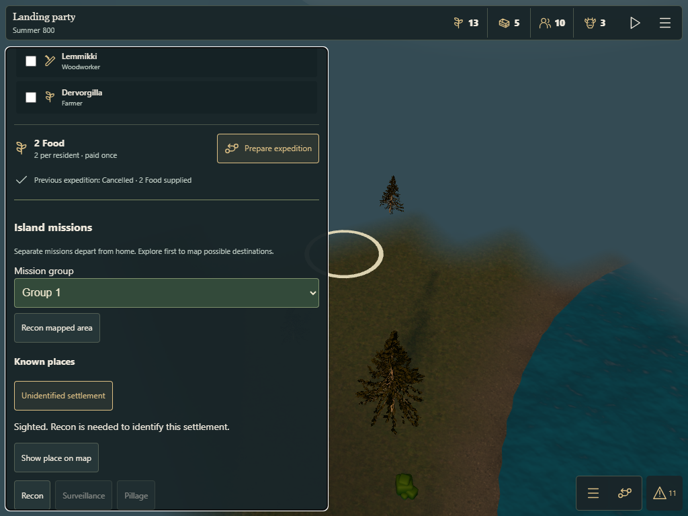
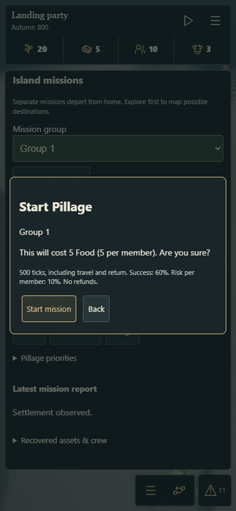
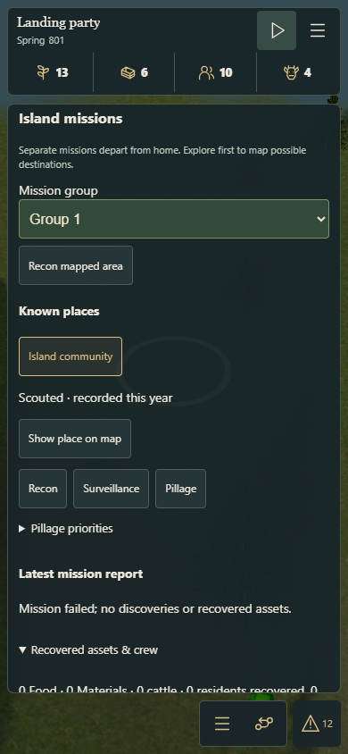

Explore finds a place. Recon identifies the clan. Surveillance refreshes dated knowledge. Pillage changes real assets.
Separate missions depart from home. Normal costs per member: Recon 2, Surveillance 4, Pillage 5 Food. The existing weather and risk rules apply.
Opens a paused review copy in a new tab.
Validation report · Ten-seed outcomes · Browser checks and frame samples · Parent revision replay
Tap the gold site ring, choose a home group and Recon. Confirm the Food quote, then start the clock. Walking alone leaves Surveillance disabled. The identified save has a returned Recon report, so Surveillance and Pillage can be selected.
Return home cancels the operation and walks the reached trail back without refunding Food. The mission reports only after actual homecoming. Drag and pinch remain map navigation.



Browser touch emulation passed. Physical iPad UAT remains open.